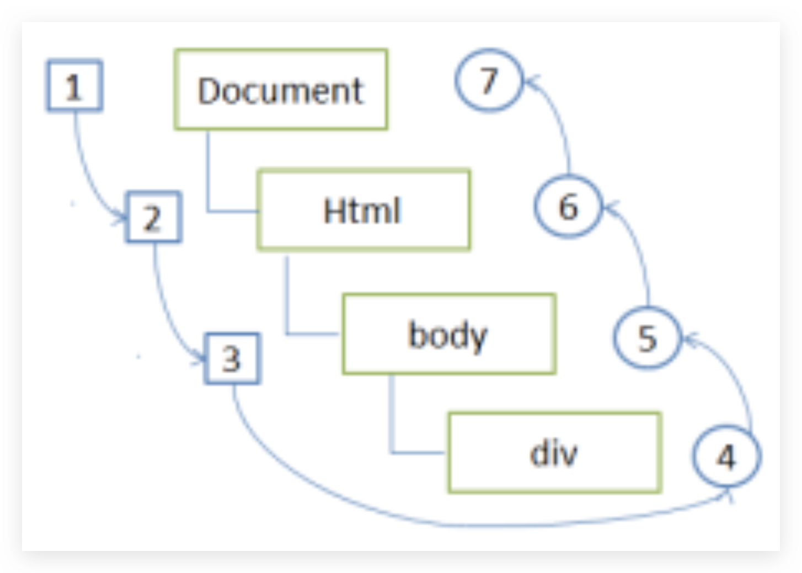
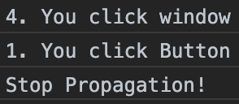

原文连接:https://www.cnblogs.com/Leophen/p/11405579.html
一、DOM 事件模型
DOM 事件模型包括捕获和冒泡，捕获是从上往下到达目标元素，冒泡是从当前元素，也就是目标元素往上到 window
二、流
流的概念，在现今的 JavaScript 中随处可见。比如说 React 中的单向数据流，Node 中的流，还有 DOM 事件流，都是流的一种生动体现。
至于流的具体概念，用术语说流是对输入输出设备的抽象。以程序的角度说，流是具有方向的数据。
三、事件流
浏览器在为当前页面与用户做交互的过程中，比如点击鼠标左键，会出现这个左键是怎么传到页面上，还有怎么响应的问题。
事件流所描述的就是从页面中接受事件的顺序，事件流分为两种：事件冒泡（主流）和事件捕获
1、事件冒泡
事件开始时由具体元素接收，然后逐级向上传播到父元素
举个例子：
<!DOCTYPE html>
<html lang="en">
<head>
<meta charset="UTF-8">
<title>Event Bubbling</title>
</head>
<body>
<button id="clickMe">Click Me</button>
</body>
</html>我们给 button 和它的父元素，加入点击事件
var button = document.getElementById('clickMe');
button.onclick = function() {
console.log('1. You click Button');
};
document.body.onclick = function() {
console.log('2. You click body');
};
document.onclick = function() {
console.log('3. You click document');
};
window.onclick = function() {
console.log('4. You click window');
};点击按钮运行效果：
也就是说，click 事件首先在 <button> 元素上发生，然后逐级向上传播，这就是事件冒泡
2、事件捕获
父元素的节点更早接收事件，而具体元素最后接收事件，与事件冒泡相反
三、DOM 事件流

DOM事件流包括三个阶段：
-
事件捕获阶段
-
处于目标阶段
-
事件冒泡阶段
1、事件捕获阶段
当事件发生时，首先发生的是事件捕获，为父元素截获事件提供了机会
<!DOCTYPE html>
<html lang="en">
<head>
<meta charset="UTF-8">
<title>Event Bubbling</title>
</head>
<body>
<button id="clickMe">Click Me</button>
</body>
</html>上面事件冒泡的 Demo 中，window 点击事件更改为使用事件捕获模式
var button = document.getElementById('clickMe');
button.onclick = function() {
console.log('1. You click Button');
};
document.body.onclick = function() {
console.log('2. You click body');
};
document.onclick = function() {
console.log('3. You click document');
};
// window.onclick = function() {
// console.log('4. You click window');
// };
window.addEventListener('click', function() {
console.log('4. You click window');
}, true);此时，点击 button 的效果是这样的：
 可以看到，点击事件先被父元素截获了，且该函数只在事件捕获阶段起作用
可以看到，点击事件先被父元素截获了，且该函数只在事件捕获阶段起作用
2、处于目标阶段
事件到了具体元素时，在具体元素上发生，并且被看成冒泡阶段的一部分
3、事件冒泡阶段
最后，冒泡阶段发生，事件开始冒泡
四、阻止事件冒泡
事件冒泡过程，是可以被阻止的。防止事件冒泡而带来不必要的错误和困扰。
阻止方法是使用 stopPropagation()，举个例子：
<!DOCTYPE html>
<html lang="en">
<head>
<meta charset="UTF-8">
<title>Event Bubbling</title>
</head>
<body>
<button id="clickMe">Click Me</button>
</body>
</html>还是上面的 demo，这里对 button 的 click 事件做了一些改造：
var button = document.getElementById('clickMe');
// button.onclick = function() {
// console.log('1. You click Button');
// };
button.addEventListener('click', function(event) {
// 这里event为事件对象
console.log('1. You click Button');
event.stopPropagation();
console.log('Stop Propagation!');
}, false);
document.body.onclick = function() {
console.log('2. You click body');
};
document.onclick = function() {
console.log('3. You click document');
};
window.addEventListener('click', function() {
console.log('4. You click window');
}, true);点击后，效果如下图：

 不难看出，事件在到达具体元素后，停止了冒泡，但不影响父元素的事件捕获
不难看出，事件在到达具体元素后，停止了冒泡，但不影响父元素的事件捕获
五、DOM0级事件
DOM0级事件，就是直接通过 onclick 等方式实现相应的事件
1、标签内写 onclick 事件
<input id="myButton" type="button" value="Click Me" onclick="alert('Hello1');" >
2、在 JS 中 使用onclick = function(){}
document.getElementById("myButton").onclick = function () {
alert('Hello2');
}运行结果 - 点击弹出：
这说明 DOM0 级添加事件时，后面的事件会覆盖前面的事件，而 DOM2级则不会，多个事件都会执行；
另外，DOM0级事件具有很好的跨浏览器优势，会以最快的速度绑定，但由于绑定速度太快，可能页面还未完全加载出来，以至于事件可能无法正常运行
六、DOM2级事件
1、DOM2级事件的方法
主流浏览器 DOM2 级事件是通过以下两个方法用于处理指定和删除事件处理程序的操作：
- addEvenetListener
- removeEventListener
2、DOM2级事件的使用
所有的 DOM 节点都包含这两个方法，使用方法如下：
- target.addEventListener(type, listener[, useCapture]);
- target.removeEventListener(type, listener[, useCapture]);
并且它们都接受三个参数：
- type：事件类型，如'click'、'mouseover'、'mouseout'，在事件名前不加'on'
- listener：事件处理方法
- useCapture：布尔参数，不传该参数时默认是 false，表示在事件冒泡阶段处理，如果是 true，则表示在捕获阶段调用事件处理程序
举个例子：
<input id="myButton" type="button" value="Click Me" onclick="alert('Hello1');" >document.getElementById("myButton").onclick = function () {
alert('Hello2');
}
document.getElementById('myButton').addEventListener('click', function() {
alert('Hello3');
}, true)
document.getElementById('myButton').addEventListener('click', function() {
alert('Hello4');
}, true)
document.getElementById('myButton').addEventListener('click', function() {
alert('Hello5');
}, false)运行结果：
注意：只有 DOM2级事件包含以下三个阶段
-
事件捕获阶段
-
处于目标阶段
-
事件冒泡阶段